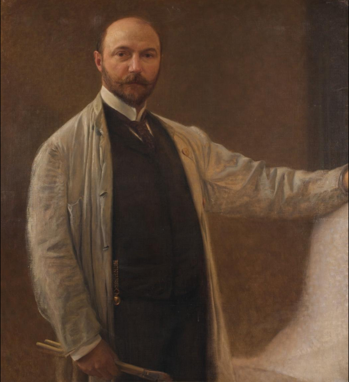

Pintor y escultor austríaco
Franz von Matsch
1861–1942
Formó con Gustav Klimt y su hermano Ernst la «Compañía de Artistas» que decoró teatros y museos por todo el imperio austrohúngaro. Cuando Klimt rompió hacia la Secesión, Matsch se quedó en el academicismo y prosperó como retratista de la corte, lo que explica que hoy se le recuerde mucho menos.